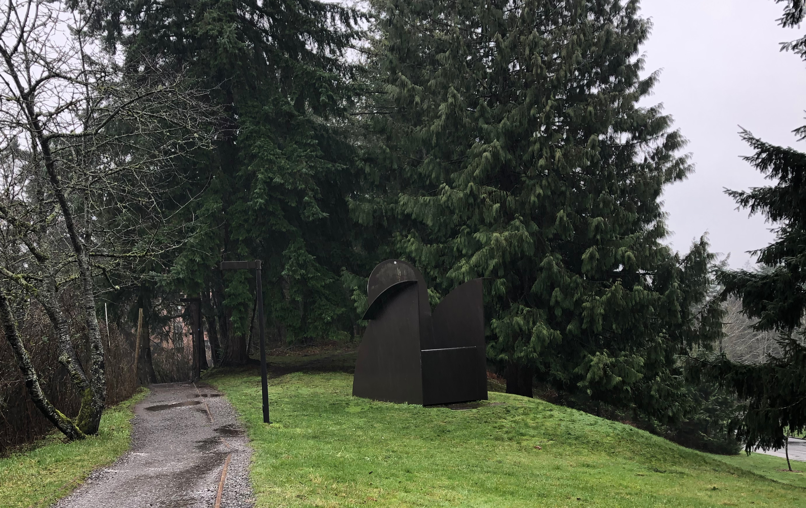

The Edinburgh Cultural Mapping Project:
Morgan Currie's Presentation
The Video Presentation
Edinburgh is “where the major cultural institutions are clustered, and also where the festivals happen” (Currie, 3:13).
Currie says that the purpose of this project is to map places like art museums and cultural areas in the city of Edinburgh (Currie, 5:00). The goal of the project was to understand where the important places including museums, art galleries, and gathering places were. She describes the outcomes of the project, which include “understanding the cultural differences across Edinburgh” (Currie, 6:47), and that the project was guided by a series of questions related to Edinburgh’s culture (Currie, 7:20).
WWU Sculpture Garden
These sculptures are placed all across Western’s campus and are permanent (Sculpture). Particularly notable is the Wright’s Triangle sculpture by Richard Serra (Wright's Triangle). Pictured here is not Wright's Triangle, but "Big Chair."
“This project started out by getting a data set that already existed of all the libraries . . . all the council-owned museums . . . and all the schools” (Currie, 12:40).
Currie says the data not from the project is called “open data” (Currie, 12:30). The project then created surveys, stored the feedback, and added that data to the data (Currie, 13:52).
Scottish National Gallery of Modern Art

(Scottish National Gallery)
Lightcatcher Gallery
The museum has a variety of unique art exhibits that change every few months (Whatcom Museum), including the People of the Sea and Cedar exhibit (Sea and Cedar).
The Western Gallery at Western Washington University
This art gallery is part of Western’s campus and hosts art exhibits. Admission is free (Western Gallery).
“To start, we looked at some existing projects” (Currie, 7:21).
Currie describes some other projects that do “Cultural Mapping,” the goal of the Edinburgh Culture & Communities Mapping Project (Currie, 7:43), including the Los Angeles Neighborhood Arts Profile (Currie, 8:12) and the London Infrastructure Map (Currie, 9:16), and the Leith Creative Asset Map (Currie, 10:32). These projects influenced and inspired the Edinburgh Culture & Communities Mapping Project (Currie, 11:30).
Some Important Museums and Gathering Places in Edinburgh
The National Museum of Scotland

(Milez)
This museum has a variety of topics and is located in the area that the project was conducted (Things to See).
“We printed out big sheets of paper. We had pens; we had Post-its; we had stickers . . .” (Currie, 15:05).
Currie says that the important places were drawn directly on the paper map and recorded that way (Currie, 16:00).
“Hubs are places that we define as representing all different kinds of art and were also publicly accessible” (Currie, 20:30).
Currie shows the data as it is collected on the map and displayed on the Edinburgh Culture Map webpage (Currie, 28:02). Currie says the map inspired the creation of LeithLate Virtual Tours, another map of art drawn on buildings made possible by the community mapping (Currie, 32:06). The project will continue by recording more data that may be useful for helping more people visit and appreciate important places and events (Currie, 34:50). Currie describes the project’s goals as not just creating maps, but creating a difference in the world (Currie, 35:00).
“If you put a map out in the world, and especially if it comes from a position of authority, it’s going to shape the territory that it’s trying to represent.” (Currie, 40:36).
Interpretation and Response
What if Bellingham had a similar mapping project? Would people be more likely to visit the museums and art galleries?
Works Cited (Click Here)
Currie, Morgan. “Edinburgh Culture & Communities Mapping Project, Morgan Currie.” YouTube, uploaded by Internet Studies Center, 3 December 2020, https://www.youtube.com/watch?v=dmIpTHM5nU4&t=2516s.
Grousebeater2, “Modern One, Scottish National Gallery of Modern Art, Belford Road, Edinburgh.jpg.” Wikimedia Commons, 28 September 2018, https://commons.wikimedia.org/wiki/File:Modern_One,_Scottish_National_Gallery_of_Modern_Art,_Belford_Road,_Edinburgh.jpg. Accessed 28 July 2021.
Milesz. “Edinburgh-scotland-city-clouds-4491305.” Pixabay, 21 September 2019, https://pixabay.com/photos/edinburgh-scotland-city-clouds-4491305/. Accessed 28 July 2021.
“People of the Sea and Cedar: A Journey Through the Tribal Cultures and History of the Northwest Coast.” Whatcom Museum, n.d., https://www.whatcommuseum.org/exhibition/people-of-the-sea-and-cedar/. Accessed 28 July 2021.
“Sculpture.” Western Washington University, n.d., https://westerngallery.wwu.edu/. Accessed 28 July 2021.
“The Western Gallery.” Western Washington University, n.d., https://westerngallery.wwu.edu/. Accessed 28 July 2021.
“Things to See and Do.” National Museums Scotland, n.d., https://www.nms.ac.uk/national-museum-of-scotland/things-to-see-and-do/explore-the-galleries/. Accessed 28 July 2021.
Waldominguez. “Edinburgh-scotland-muesum-1138612.” Pixabay, 16 Jan 2016, https://pixabay.com/photos/edinburgh-scotland-museum-1138612/. Accessed 28 July 2021.
“Whatcom Museum.” Whatcom Museum, n.d., https://www.whatcommuseum.org/exhibition/people-of-the-sea-and-cedar/. Accessed 28 July 2021.
“Wright’s Triangle.” Western Washington University, n.d., https://westerngallery.wwu.edu/. Accessed 28 July 2021.